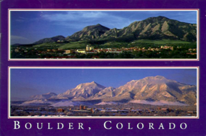

Support us!
Donate!
If you use JRobin regularly, consider supporting our project so that the project admins can spend more time doing what they do best - developing JRobin. Besides doing a good deed for the community of JRobin users, you'll also be listed on our Credits page. JRobin is supposed to be free, but its developers cannot work for free forever. If you want to place a donation (however small it is), askArne Vandamme how to do that.
Postcards
Small things make life easier. A colorful postcard from a happy JRobin user will help us to forget all hard days (and nights) spent with JRobin. Here is the first postcard we got:

(Thank you, Louis)
If you want your postcard to appear here, just send it to the following address:
Sasa Markovic
Marijane Gregoran 3/3
11000 Belgrade
Serbia and Montenegro
Copyright © 2003, 2004 Sasa Markovic & Arne Vandamme. All Rights Reserved.